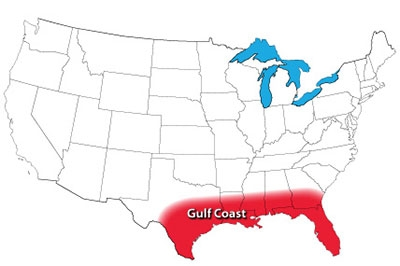
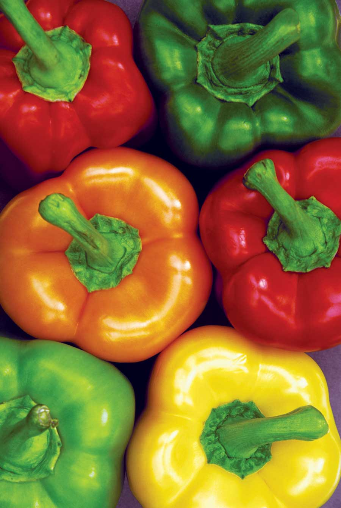

My father gardened on the Gulf Coast for 70 years, and he once joked that he could grow bushels of bell peppers without even trying. Plenty of fellow gardeners agree, because sweet peppers tied with super-dependable cherry tomatoes for first place. The Gulf Coast is also the home territory of short-day onions, which are more sweet than pungent. Remember to plant them in fall, and late spring will find you knee-deep in juicy onions.
Beyond the Top 10, mild winter conditions create near-perfect growing conditions for collards, which hold 11th place in the Coastal South. The exuberance for collards is echoed in high performance ratings for mustard, turnips and other leafy greens grown in fall and winter. In summer gardens in this sultry region, naturally pest-resistant Southern peas are actually more popular than snap beans, and okra and eggplant are easy to grow.
Cabbage family: Broccoli, collards
Cucumber family: Cucumber, pumpkin, watermelon, winter squash
Leafy greens: Arugula, chard, mustard (all types)
Legumes: Lima bean, snap bean (all types), Southern peas
Root crops: Beet, garlic, onion, sweet potato, turnip
Tomato family: Eggplant, hot pepper, tomato (all types)
Miscellaneous: Okra
Read The Best Crops for Your Garden to find top crops for other U.S. gardening regions.
|
 NATE SKOW The Gulf Coast gardening region. |
 LIQUID LIBRARY Sweet peppers were rated as the No. 1 food garden crop by gardeners in the Gulf Coast region. |
|